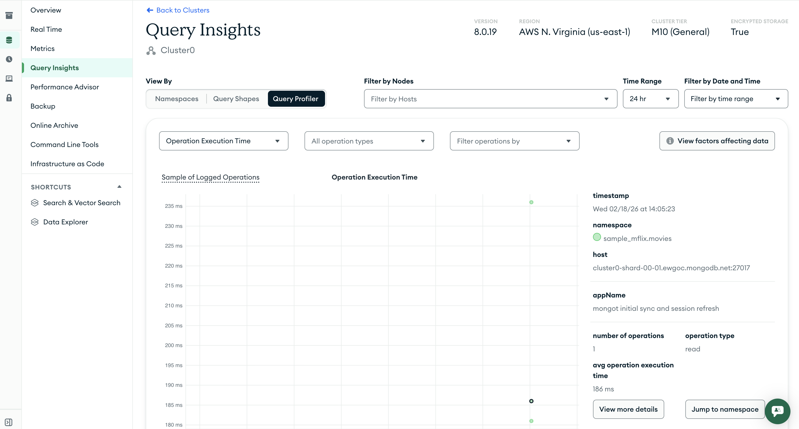
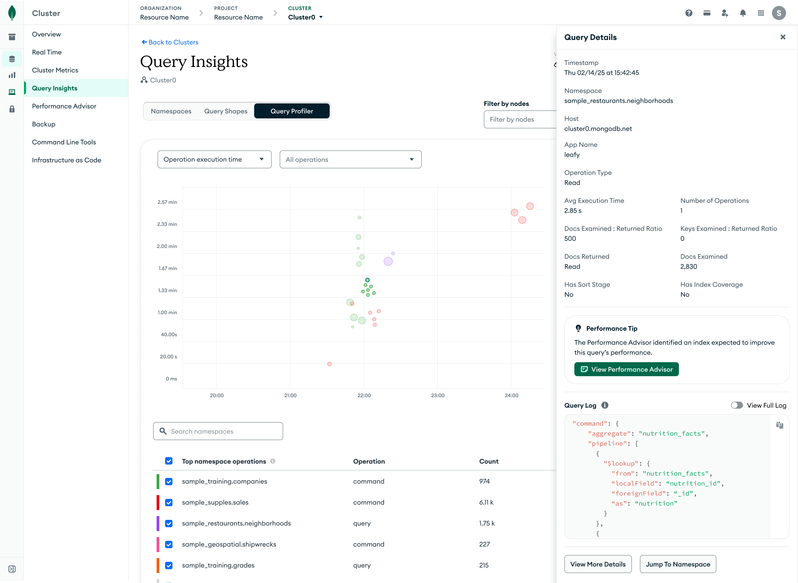
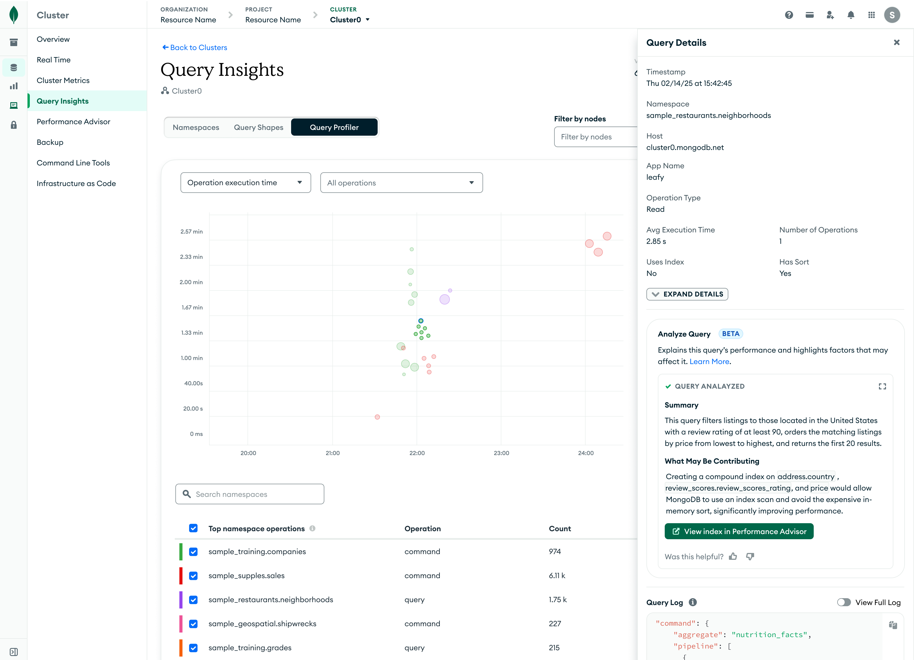

MongoDB: Atlas Growth
During my time at MongoDB, I led and contributed to a wide range of growth experiments. Many of these projects produced great results and were shipped to production and remain live today. The work spanned key parts of the user lifecycle, including onboarding, monetization, and retention.
I also contributed to experiments that did not move metrics but produced valuable insights that informed future decisions. Across all of this work, my focus was on identifying growth opportunities that addressed real user pain points while improving key business metrics.
To respect confidentiality, specific business metrics are not disclosed. Outcomes are described at a directional level.
Background
The Query Profiler is a MongoDB Atlas feature designed to help users analyze slow queries, diagnose performance issues, and understand query execution behavior.
Problem
We conducted user research and identified several pain points in the existing experience. One of the primary issues was that users often did not know how to diagnose a slow query. They frequently had to reference external documentation, consult teammates, or rely on other tools to understand what was happening.
Another issue was discoverability. Important features and details were buried across multiple pages, even though users wanted to see this information immediately while diagnosing performance problems.
Before: Selecting a query displayed only high-level information.

Hypothesis
Displaying guidance for slow queries and key information upfront would help users diagnose issues more effectively, improving outcomes such as index creation and retention.
Solution
Redesigned the Query Profiler experience to surface clearer guidance earlier and help users move from diagnosis to action.
Key changes included:
- Surfacing contextual guidance for different types of slow queries. For example, when a query was missing an index, the experience highlighted this issue and linked directly to index creation.
- Highlighting guidance for queries using $lookup operations, which are known to cause performance issues, along with tips on how to reduce or optimize these operations.
- Bringing key information, such as the query log, into the primary view. User research showed this was information users consistently wanted to see upfront.

Example of different types of guidance

Outcome
Parts of the redesign were tested through separate experiments. Guidance related to index creation and $lookup usage was tested earlier and showed strong results, including increased index creation rates and reduced $lookup usage. Given the positive results, these changes were released to production.
Other parts of the redesign are ongoing as the team explores additional guidance and opportunities to leverage AI. Early signals indicate that users value the in-product guidance, and engagement with these features continues to correlate with improvements in key performance metrics.
AI-Based Analysis - Experiment in Progress
